Best Ultra Luxurious Hotels
British Virgin Islands
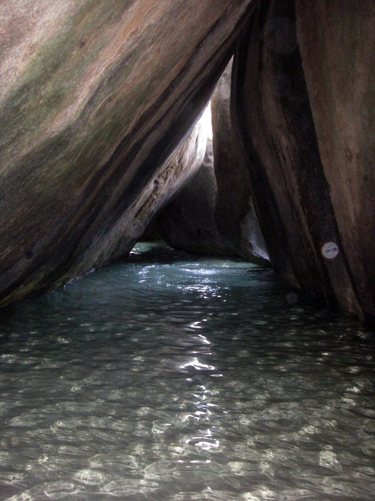
Rosewood Little Dix Bay
Virgin Gorda, British Virgin Islands
On Virgin Gorda, Laurance Rockefeller built this bay into a low-impact nature retreat in 1964 — buildings kept below the tree line, nothing between the room and the beach but a screen door. Queen Elizabeth II and Prince Philip stayed here for the privacy as much as the view; Rosewood rebuilt the property after the 2017 hurricanes without changing that founding restraint.
Fiji
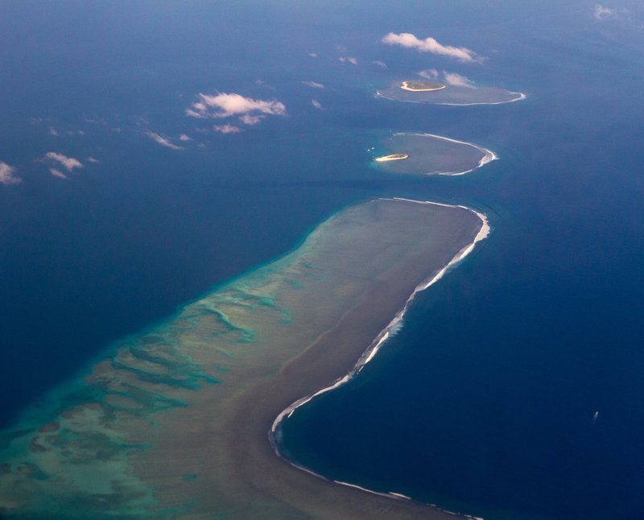
Laucala Island
Laucala Island, Fiji
The entire 3,500-acre island is the resort — 25 villas, each with a private pool, and roughly five staff for every guest. The rate covers everything, from meals grown on the island's own farm to a David McLay Kidd golf course and unlimited diving across the surrounding reef. Closed for a full renovation, reopening in 2027 under COMO.
France

Cheval Blanc Paris
Paris, France
LVMH spent years turning the old La Samaritaine department store into its Paris flagship — a butler assigned to every room, Seine views from nearly all of them. Arnaud Donckele runs the rooftop restaurant, Le Tout-Paris, which holds three Michelin stars, and the Dior Spa two floors down has a 30-metre pool lit entirely from below.

Hôtel du Cap-Eden-Roc
Cap d'Antibes, France
A private villa turned hotel in 1889 on 22 acres of pine-shaded gardens at the tip of Cap d'Antibes, with a seawater pool blasted into the rocks at Eden-Roc. A Riviera institution since the 1920s, when Gerald and Sara Murphy's summer-long stay here inspired F. Scott Fitzgerald's Tender Is the Night.

La Réserve Paris
Paris, France
Behind an unmarked courtyard gate near the Champs-Élysées, this 40-room Haussmann mansion has no public lobby and no sign — you're either expected or you're not. Jérôme Banctel's restaurant Le Gabriel holds two Michelin stars, and the Nescens spa in the basement runs Swiss medical-grade longevity programs.
French Polynesia
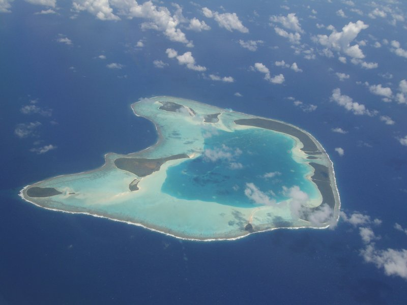
The Brando
Tetiaroa, French Polynesia
Marlon Brando bought this atoll in the 1960s after filming Mutiny on the Bounty nearby; the resort that eventually opened on it — 35 villas, each with its own pool, reachable only by a 20-minute private flight from Tahiti — runs on solar power and coconut-oil biofuel. The rate includes everything, across a reef under UNESCO protection since before the hotel existed.
Indonesia
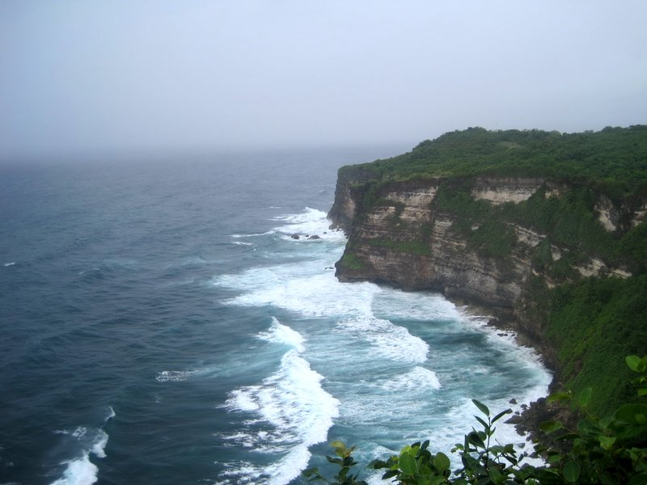
Bvlgari Resort Bali
Bukit Peninsula, Bali, Indonesia
59 villas and five mansions strung along a 160-metre limestone cliff on Bali's Bukit Peninsula, near Uluwatu, every one with its own infinity pool facing the Indian Ocean. The flagship Bvlgari Villa alone runs 1,300 square metres with a 20-metre heated pool cascading into a second pool below it.
Italy

Aman Venice
Venice, Italy
Aman's Venice outpost occupies one of only eight monumental palazzos still standing on the Grand Canal, with 24 rooms wrapped around original 18th-century Tiepolo ceiling frescoes. Two private gardens back onto the water — genuinely rare in a city built wall-to-wall — and the kitchen will serve any dish, in any room, at any hour.

Belmond Hotel Cipriani
Giudecca, Venice, Italy
79 rooms and suites on the quiet island of Giudecca, reached from St Mark's Square by the hotel's own launch across five minutes of lagoon — the crossing alone does most of the work of leaving Venice's crowds behind. The pool, filled with heated water, is the only one of its size in the city.

Passalacqua
Lake Como, Italy
An 18th-century villa on Lake Como, restored from a private residence into just 24 rooms, with terraced gardens that step straight down to the water and George Clooney's villa in view across the lake. Breakfast, afternoon tea and evening aperitivo all come with the room rate.
Japan

Aman Tokyo
Otemachi, Tokyo, Japan
84 suites fill the top six floors of the Otemachi office tower in central Tokyo, arranged so every one is a suite. The spa spans two full floors with onsen-style hot baths and a 30-metre pool, and Musashi, the in-house sushi counter, serves a 21-course omakase.
Maldives
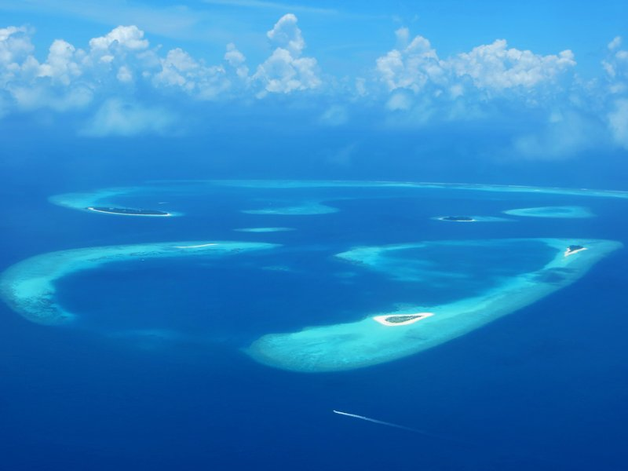
Cheval Blanc Randheli
Noonu Atoll, Maldives
LVMH built this one from scratch across a private cluster of islands in Noonu Atoll, connected by raised wooden walkways, with 46 villas and a dedicated Ambassadeur assigned to each. The spa, run by Guerlain, wraps around a 30-metre infinity pool.
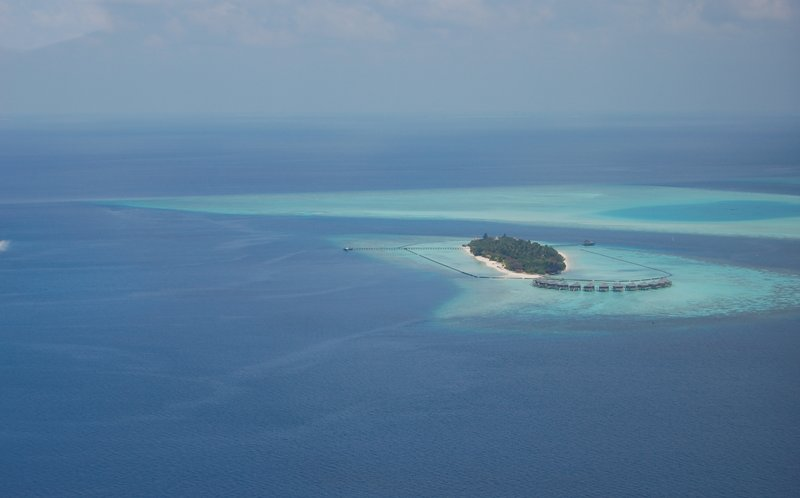
Kudadoo Maldives Private Island
Lhaviyani Atoll, Maldives
Kudadoo built its entire pitch around one idea — Anything, Anytime, Anywhere — meaning the rate genuinely includes everything: a personal chef on call, unlimited spa treatments, a private infinity pool at each of the 15 overwater residences. The island caps out at 30 guests total.
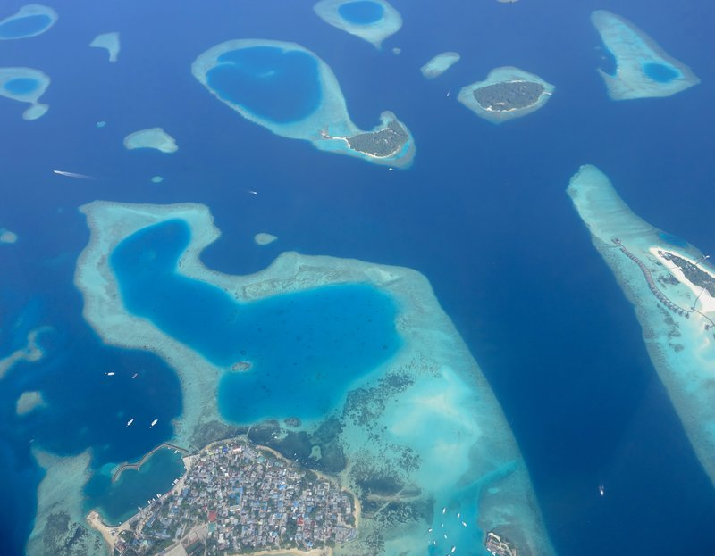
Soneva Jani
Noonu Atoll, Maldives
59 overwater and island villas spread across a 5.6km lagoon in Noonu Atoll, the smallest still larger than most hotels' presidential suites. Every villa has a private pool and a dedicated barefoot butler, plus a retractable bedroom roof and a water slide straight into the lagoon.
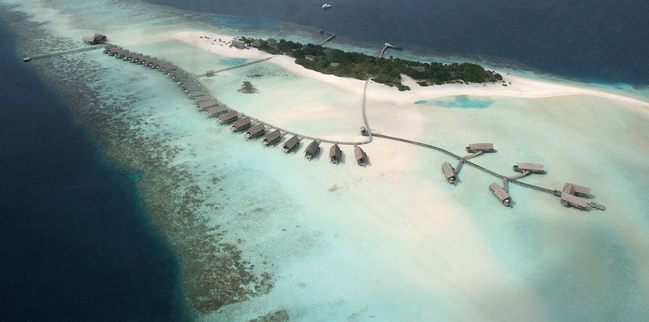
Velaa Private Island
Noonu Atoll, Maldives
47 villas in Noonu Atoll, each with a private pool, built around the only golf course in the Maldives — a 9-hole José María Olazábal design — and a snow room for contrast therapy that feels almost absurd this close to the equator. Michelin-trained chef Adeline Grattard runs the kitchens.
Morocco
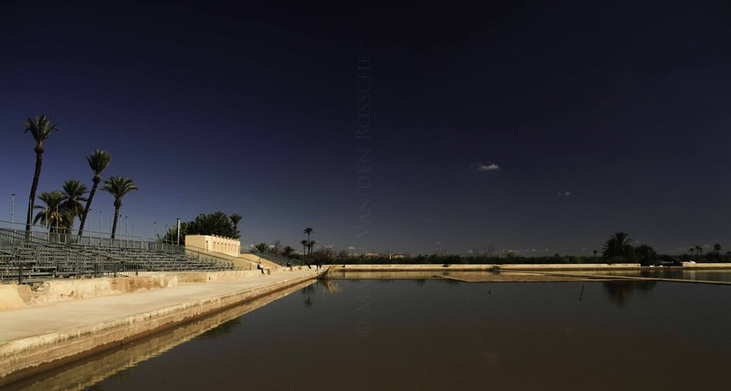
Amanjena
Marrakech, Morocco
40 pavilions and two-storey maisons wrap around a reflecting pool the size of a small lake, set in a walled oasis of centuries-old olive trees just outside Marrakech. The domes and rose-colored walls draw on traditional Moroccan palace architecture, and the hammam spa runs full traditional rituals.
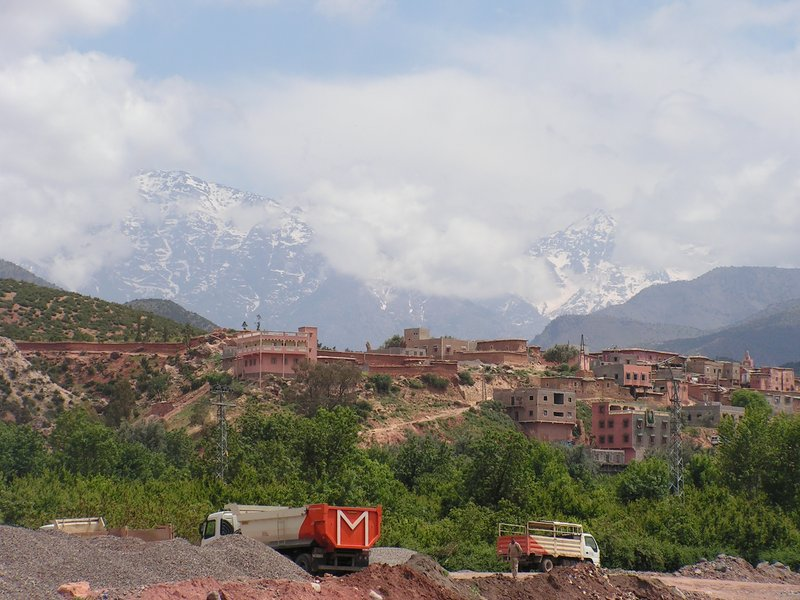
Kasbah Tamadot
Asni, Atlas Mountains, Morocco
Richard Branson spotted this kasbah from a hot air balloon over the Atlas Mountains and opened it as a hotel in 2005; after the 2023 earthquake, it was rebuilt larger, with 42 rooms across the main kasbah, three-bedroom riads and Berber tents pitched in the gardens. Hiking runs straight into the mountains from the property.
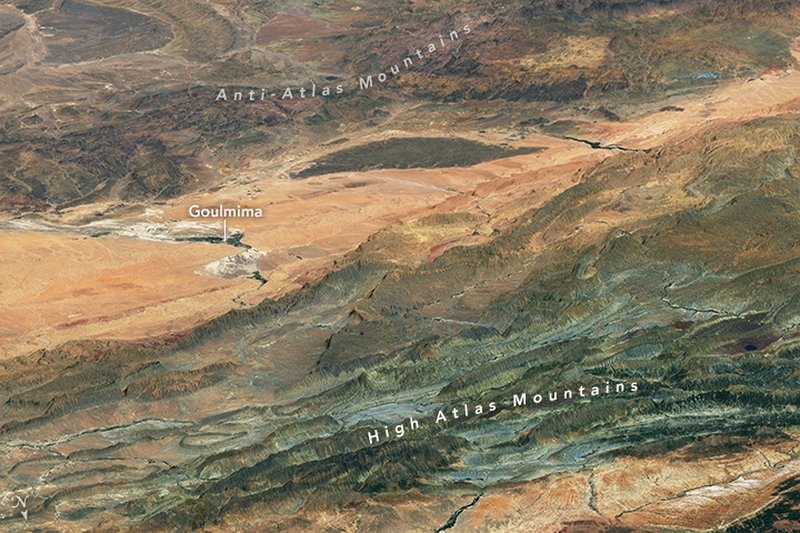
Mandarin Oriental, Marrakech
Marrakech, Morocco
There isn't a single hotel room on this 20-hectare estate outside Marrakech — all 61 stays are freestanding villas, each with its own garden and pool, scattered across grounds planted with olive trees and roses with the Atlas Mountains visible in the distance.
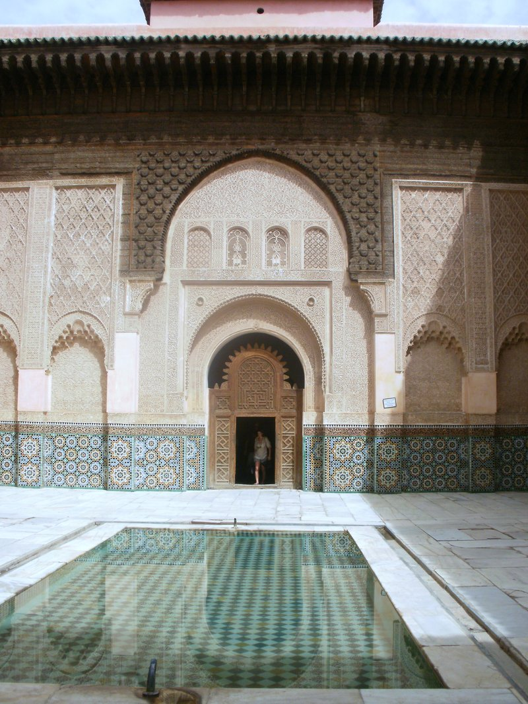
The Oberoi, Marrakech
Marrakech, Morocco
84 rooms, suites and villas spread across 28 acres of olive and citrus groves outside Marrakech that predate the hotel by centuries, with private pools attached to 76 of them. The central courtyard was modeled directly on the 14th-century Medersa Ben Youssef across town.

Royal Mansour Marrakech
Marrakech, Morocco
King Mohammed VI commissioned this one personally — 53 private riads, each three stories with its own rooftop terrace and plunge pool, connected by underground tunnels so staff can appear and disappear without crossing a courtyard. La Grande Table Marocaine holds two Michelin stars.
Saint Barthélemy
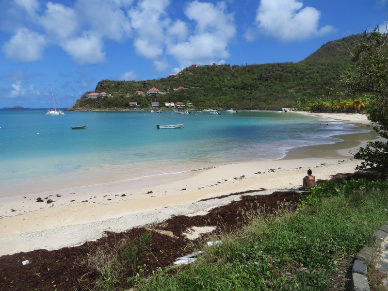
Eden Rock
St Jean Bay, Saint Barthélemy
37 rooms, suites and villas built directly onto a rock promontory splitting St Jean Bay in two, founded in the 1950s by the island's own mayor and rebuilt from the ground up after Hurricane Irma. Howard Hughes, Greta Garbo and generations of the Rockefeller family have stayed here.
Saint Lucia
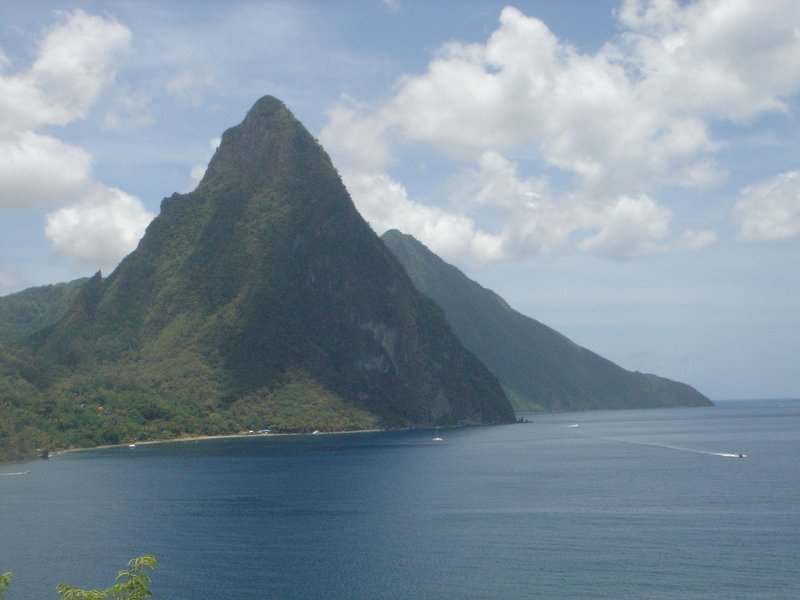
Jade Mountain
Soufrière, Saint Lucia
In Soufrière, on St Lucia's west coast, 24 sanctuaries have a wall deliberately left off each one, so the infinity pool inside your room runs straight out toward the twin volcanic peaks of the Pitons with nothing in between. Every pool is surfaced in one-of-a-kind glass tile, sized and colored differently suite to suite.
Saudi Arabia
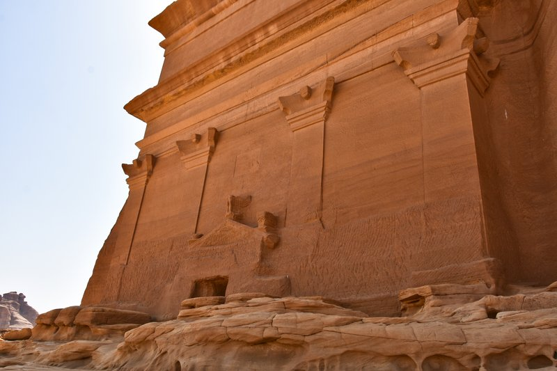
Desert Rock Resort
AlUla, Saudi Arabia
54 villas and 10 suites carved into the cliffs of AlUla, near Hegra, Saudi Arabia's first UNESCO World Heritage Site. Cliff-hanging villas and cave suites come with cliffside plunge pools, and the Michelin-starred Nyra serves the property's fine dining.
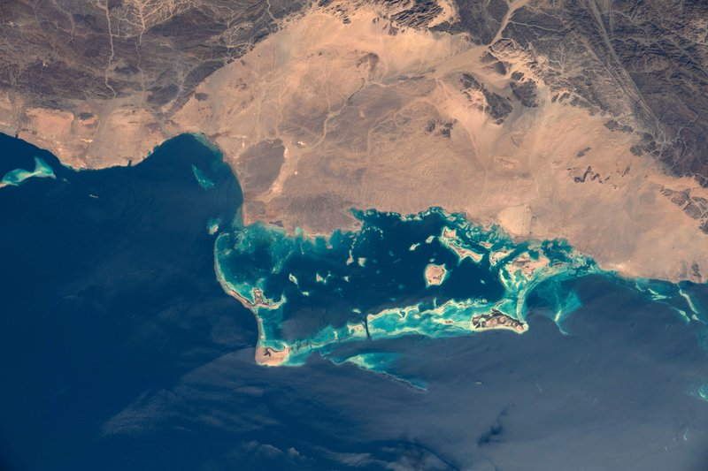
Nujuma, a Ritz-Carlton Reserve
Red Sea, Saudi Arabia
63 villas on a private island in Saudi Arabia's Red Sea development, accessible only by seaplane or yacht, built around a coral reef that was completely uninhabited before construction began. Every villa has its own pool and a dedicated butler.
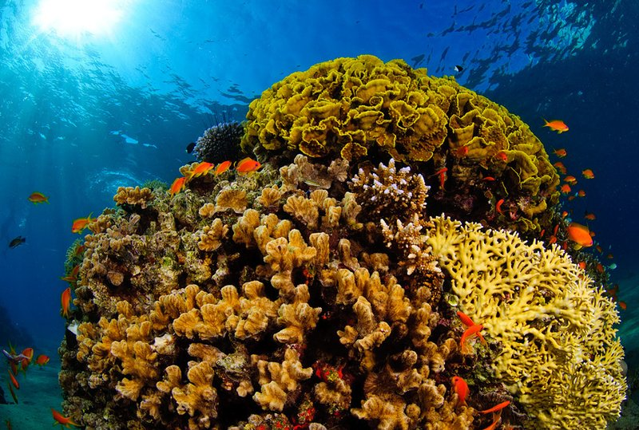
The St. Regis Red Sea Resort
Red Sea, Saudi Arabia
90 villas on the same private Red Sea archipelago, every one with its own pool and direct coral reef access, run with the full St. Regis ritual — a dedicated butler for every guest, evening champagne sabering, and a butler-drawn bath on request.
Seychelles
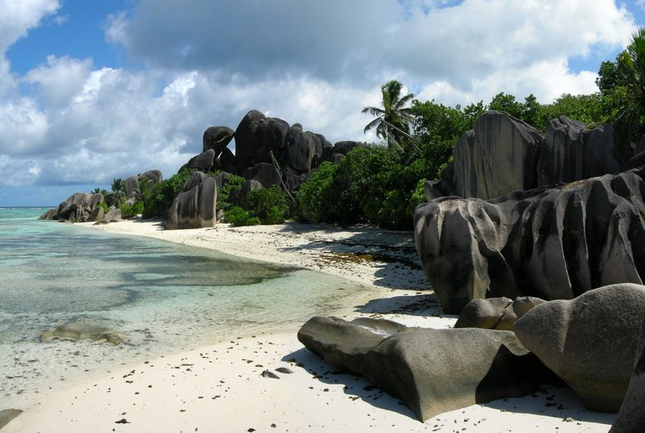
North Island
Seychelles
11 villas on an entire private island, each with its own plunge pool and a staff-to-guest ratio north of 2:1. The rate covers essentially everything — meals built around what you actually want to eat, all drinks, diving, kayaking, laundry — and giant Aldabra tortoises wander the grounds freely.
South Africa
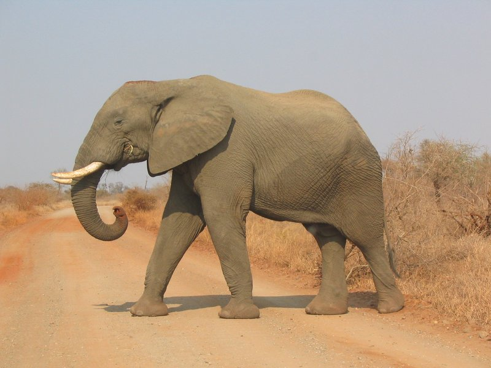
Royal Malewane
Greater Kruger, South Africa
Four lodges and three private villas sit on their own concession inside Greater Kruger, unfenced and contiguous with the national park itself, so wildlife moves through freely. The two Royal Suites run 5,490 square feet each with a private chef and a dedicated game vehicle.
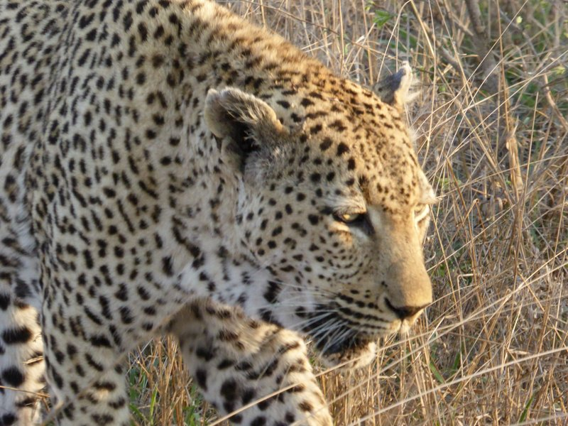
Singita Boulders Lodge
Sabi Sand, South Africa
13 suites on the Sand River inside the Sabi Sand reserve, each with a private heated plunge pool, built around a wine cellar constructed literally around a boulder that couldn't be moved during construction. A dedicated tracker and resident sommelier round out the staff.
Tanzania
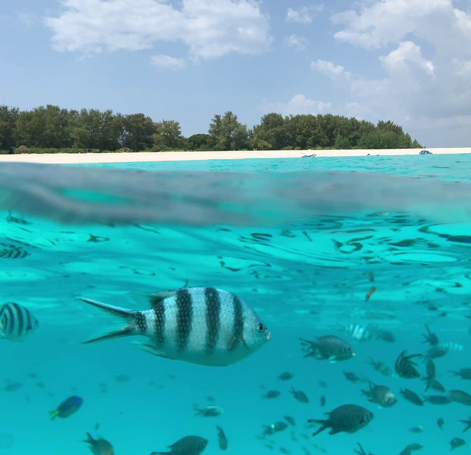
andBeyond Mnemba Island
Zanzibar, Tanzania
Off the coast of Zanzibar, 12 open-sided Bandas shaped like the spiral of a nautilus shell sit on an island just 1.5km wide, ringed by one of the healthiest coral reefs in the Indian Ocean. There's no wall between the room and the sea, and green turtles nest on the beach the island shares with guests.
Thailand

Capella Bangkok
Bangkok, Thailand
101 rooms, suites and riverfront villas along the Chao Phraya, each with a dedicated Culturist — a concierge who curates the entire stay — and a private balcony over the water. Mauro Colagreco's Côte holds two Michelin stars.
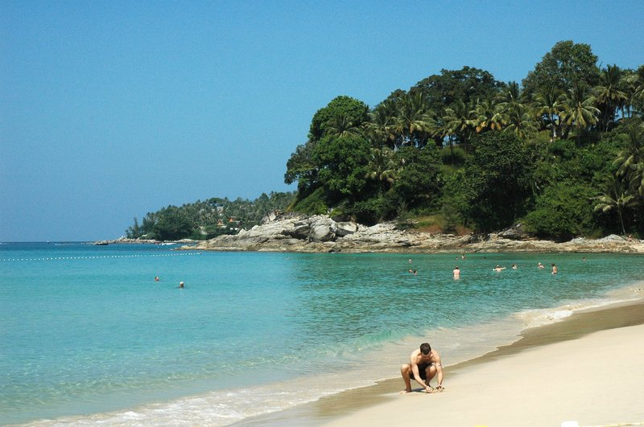
Amanpuri
Phuket, Thailand
The first Aman ever built, opened in 1988 on a private headland above Pansea Beach on Phuket, with 83 pavilions and villas that reopened in late 2026 after a full renovation. The larger villas come with a private pool, a live-in housekeeper and a personal chef.
United States

Aman New York
New York, United States
83 suites fill the Crown Building on Fifth Avenue, and there isn't a standard room in the building — the smallest suite still runs a soaking tub and Aman's signature minimalist design. The three-floor spa has two indoor pools and a jazz lounge, deliberately built to feel nothing like Manhattan.
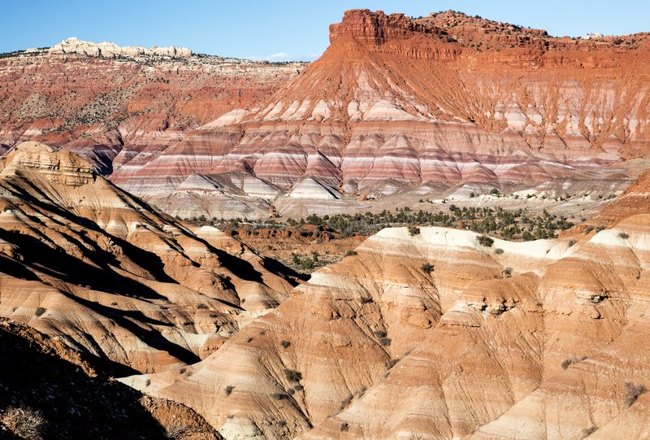
Amangiri
Utah, United States
Thirty-four suites, plus ten tented pavilions at the adjoining Camp Sarika, cut into 900 acres of red-rock desert on Utah's Colorado Plateau, where the concrete architecture is built to disappear against the mesa. The pool wraps around a stone outcrop so the water seems to grow out of the landscape.
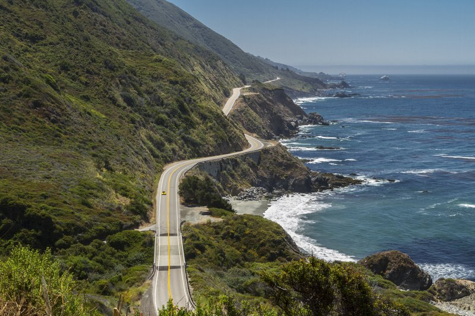
Post Ranch Inn
Big Sur, United States
40 rooms perched 1,200 feet above the Pacific in Big Sur, on a former cattle ranch homesteaded in the 1860s, with no televisions and construction designed to disturb as few trees as possible. Peak Houses have curved living roofs planted with grass and wildflowers so they read as part of the hillside from above.
Zimbabwe
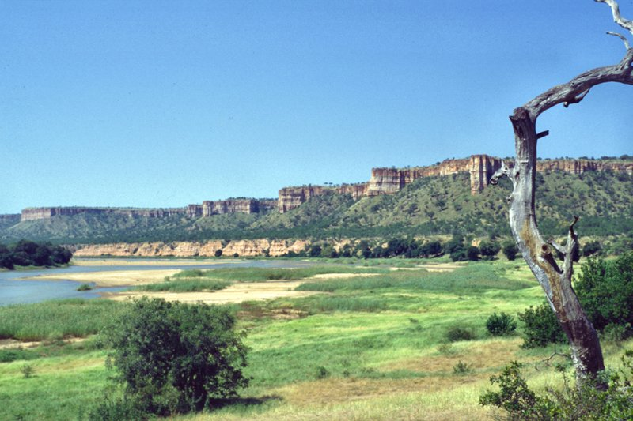
Singita Pamushana
Malilangwe, Zimbabwe
8 suites on a private 130,000-acre reserve in southeastern Zimbabwe, one of the region's most biodiverse conservation areas, where black rhino, elephant and roan antelope move freely across the property. Everything's included — premium wine, twice-daily game drives, walking safaris.